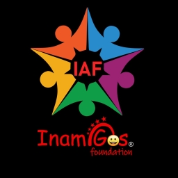
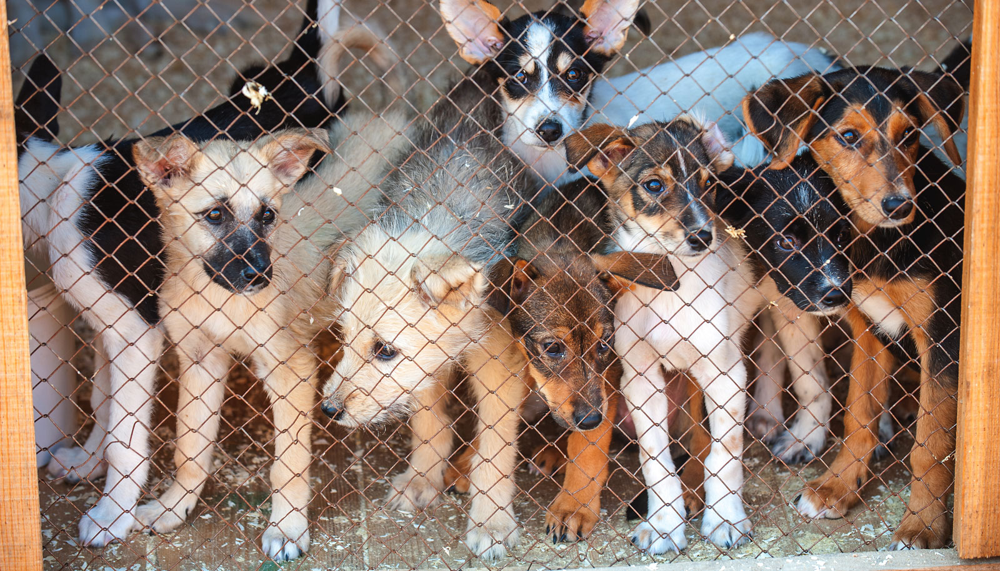

Spreading Kindness, Empowering Communities
InAmigos Foundation is a Section 8 registered non-profit organization dedicated to fostering positive change through education, women's empowerment, animal welfare, and environmental sustainability.


Who We Are
Creating lasting social impact through collective action, transparency, and sustainable programs.
InAmigos Foundation, founded on September 23, 2020, by Mr. Govind Shukla (Founder & CEO), is a Section 8 registered non-profit organization committed to creating lasting social impact. With its base in Chhattisgarh, the foundation operates across India, addressing critical societal issues through a network of dedicated professionals and volunteers.
A Message from our Founder
At InAmigos Foundation, we believe in the power of collective action. Our transparent operations and strong partnerships enable us to bring real, measurable change to society. Through our social media presence and online platforms, we ensure that every initiative reaches the right audience, encouraging more individuals and organizations to join our mission.

Our Key Initiatives & Impact:
- ✓ Project SEVA – Over 50,000+ meals and clothing distributed to the underprivileged.
- ✓ Project BACHPANSHALA – Bridging educational gaps by training underprivileged children in basic digital literacy, life skills, and school education support.
- ✓ Project JEEV – Dedicated to animal welfare, feeding 50+ stray animals daily through our volunteer network.
- ✓ Project UDAAN – Empowering women by collaborating with self-help groups in rural areas, promoting financial independence, skill development, and menstrual hygiene awareness.
- ✓ Project PRAKRITI – Advocating for sustainability and environmental conservation by planting 20,000+ saplings and supporting eco-friendly agriculture.
- ✓ Project VIKAS – Facilitating employment and skill development through internships in various fields, having trained 30,000+ interns in the last four years in data operations, finance, research, content writing, digital marketing, social work, and more.
At InAmigos Foundation, we believe in the power of collective action. Our transparent operations and strong partnerships enable us to bring real, measurable change to society. Through our social media presence and online platforms, we ensure that every initiative reaches the right audience, encouraging more individuals and organizations to join our mission.
Join Us in Making a Difference
Whether through volunteering, partnerships, or donations, every contribution strengthens our cause and enables us to expand our reach and impact.
Together, we can build a more inclusive, compassionate, and empowered society.
Our Ongoing Projects
We coordinate six diverse initiatives designed to elevate marginalized sections, restore the environment, care for stray animals, and prepare the youth.


Project Name
Project Motto/Tagline
Detailed paragraph 1.
Detailed paragraph 2.
Activity Gallery
Real moments captured from our ground-level campaigns, plantation drives, and educational initiatives across various states.


Get Involved
Whether you choose to contribute financially, volunteer your valuable time, or join our internship programs, your commitment drives our work.
Support with Donation
Every contribution helps us buy food packages, clothes, saplings, and child learning kits. Donors receive tax benefits under Section 80G and 12A certification guidelines.
Donate NowApply as Volunteer
Work alongside ground coordinators to distribute food, coordinate plantation drives, feed animals, or mentor children at BachpanShala learning centers.
Volunteer FormJoin the Internship
Gain professional experience across digital marketing, content writing, data operations, research, or social work. Join our network of over 30,000+ trained interns.
Join the TeamLatest Blogs & Articles
Read updates and stories from InAmigos Foundation initiatives across India.
Project Vikas: Transforming Careers, One Internship at a Time
Highlighting how Project Vikas facilitates youth empowerment, employment, and skill development through structured internship programs in digital fields.
Read More
Sustainability
Mission Life: Great Vision of InAmigos Foundation for a Sustainable Development Future
Detailing the vision of InAmigos Foundation for a green and sustainable future, focusing on eco-friendly agriculture and mass tree plantation under Project Prakriti.
Read More Sustainability
Sustainability
Save Water, Save Life: A Call to Action by InAmigos Foundation
Water is the source of all life. Read about our latest campaign highlights, awareness guidelines, and regional initiatives taken to conserve clean water.
Read MoreAdopt a Healthy Lifestyle: A Path to Holistic Well-Being
Insights into community health, nutrition distribution, and holistic well-being strategies practiced by our Project Seva coordinators to support underprivileged slum clusters.
Read More
Women Empowerment
Udaan: Where Women Rise, Dreams Soar, and Change Begins
Explore Project Udaan, InAmigos Foundation's flagship initiative dedicated to women's empowerment, focusing on education, financial independence, and breaking societal barriers.
Read More
Project Jeev
Project Jeev - In This Life, Save A Life
The word Jeev in Hindi means animals. Animals have always co-existed with humans, yet over time, humans have often forgotten their responsibility toward these speech-deprived creatures. Just because animals cannot speak and express their needs, they are sometimes taken for granted.
Read More Sustainability
Sustainability
Embracing LIFE: Sustainable Living with InAmigos Foundation
Explore how InAmigos Foundation supports sustainable living through LIFE (Lifestyle for Environment) practices. Discover actionable steps to decrease your ecological footprint.
Read More Women Empowerment
Women Empowerment
InAmigos Foundation: Transforming Lives
Discover how the InAmigos Foundation, through its five core programs, is driving social change and building a compassionate, resilient, and highly supportive community.
Read More
Education
BachpanShala: Shaping Dreams with InAmigos
Discover how BachpanShala, an initiative by InAmigos Foundation, is transforming the lives of underprivileged children by introducing basic digital literacy, mentoring, and support.
Read More
Animal WelfareAnimal Protection: Protect Wildlife, Protect Ourselves: A Harmonious Future
Protect Wildlife, Protect Ourselves: A Harmonious Future! Explore our role in protecting regional biodiversity and caring for regional stray animal health and habitats.
Read More